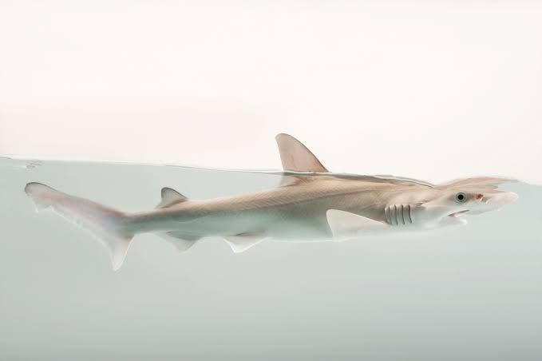
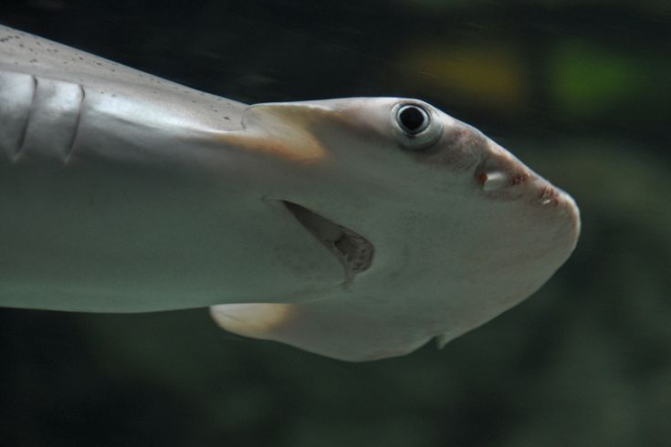
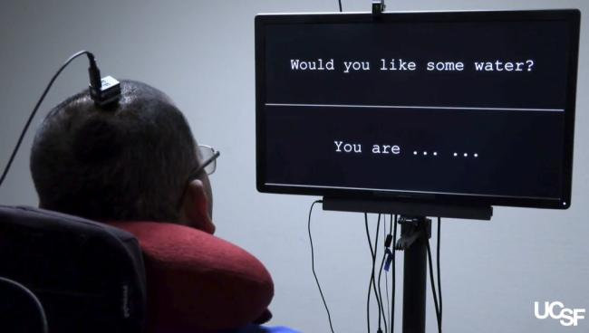
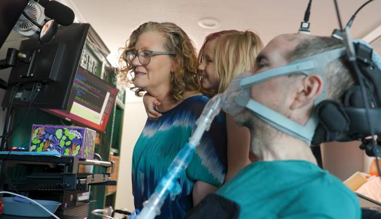
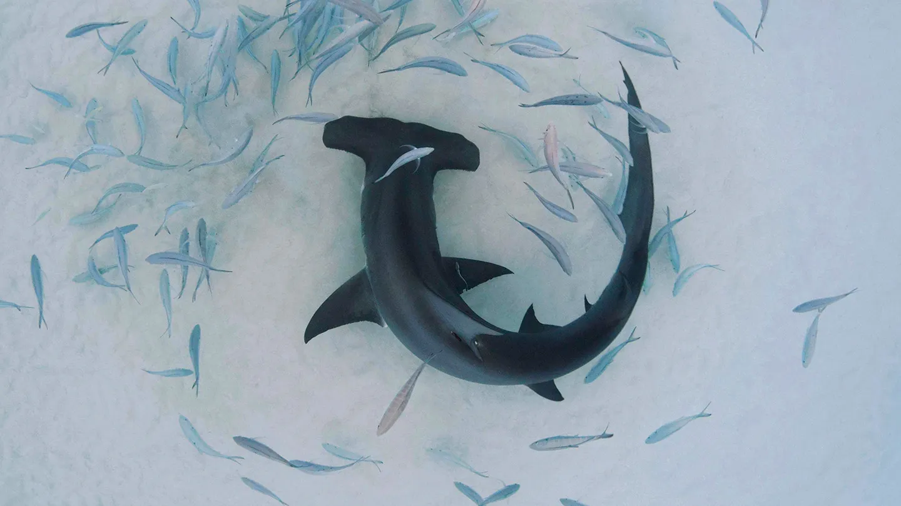
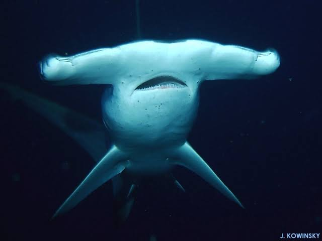

Bonnethead sharks are the only shark species where males and females have a clearly different head shape, males end up with a pointed snout, females a rounder one. For decades, the accepted explanation was simple, a male's head sharpens into a point specifically once it reaches sexual maturity, a straightforward hormone-driven signal of adulthood.
A team led by the University of Miami's Rosenstiel School set out to actually test that assumption with real data, something nobody had done before. They sampled 144 bonnethead sharks across two bays in Florida, measuring head shape and diet in the very same individual animals rather than stitching together separate datasets collected at different times.
The results ran backwards from the textbook version. Both male and female bonnetheads actually start out with pointier heads as juveniles, and heads get rounder with age, especially in females, the opposite of "males sharpen at maturity." The team also directly ruled out diet as the cause, sharks living in the same bay ate essentially the same food regardless of sex.
Why it matters is that bonnetheads are the only documented case of this kind of head-shape difference in any shark species, so they've quietly become a natural test case for how and why male and female animals evolve to look different from each other at all, and the accepted explanation had simply never been properly checked until now.


The goal is to give people with paralysis, from ALS, stroke, or spinal injury, a way to speak in real time, just by thinking about what they want to say. A tiny array of electrodes is surgically implanted directly onto the part of the brain that controls speech. Even when a person's muscles can no longer follow through, the neurons that would normally coordinate the mouth, tongue, and vocal cords still fire exactly as if they were speaking.
A deep-learning system reads that neural activity and decodes it, not word by word, but down to individual phonemes, the small units of sound that make up speech, then instantly rebuilds them into synthesized words in the person's own voice. In 2026, one system reached over 99% accuracy and could turn a thought into audible speech in under a quarter of a second, fast enough to hold a real back-and-forth conversation.
One man with ALS is now using a version of this system daily, unsupervised, at home rather than in a lab, to talk with his kids and message friends. It's still early. Only a handful of individual patients have used these systems so far, and making the technology work reliably, affordably, and for many different causes of paralysis is the next big hurdle.
A group of crows is called a "murder," though nobody's fully sure why.
Octopuses can taste with their entire body, their suckers are packed with chemoreceptors.
A blue whale's heart is roughly the size of a small car, and beats only 8-10 times a minute at the surface.
Elephants are known to return to and gently touch the bones of dead herd members years later.
Your stomach gets an entirely new lining every 3 to 4 days to survive its own acid.


Sphyrna tiburo
The smallest member of the hammerhead family, the bonnethead is easy to tell apart from its relatives by its shovel-shaped head, rounder and less dramatically wide than a true hammerhead's.
It's one of the only sharks known to regularly eat plants. Bonnetheads graze on seagrass alongside their usual diet of crabs and shrimp, and can actually digest a meaningful portion of it, making them functionally omnivorous, extremely unusual for any shark.
They're found in shallow coastal waters throughout the western Atlantic and Gulf of Mexico, and are currently the only shark species known to show a clear difference in head shape between males and females.
Click a cell and type. Use arrow keys to move, or click a clue to jump to it.